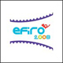
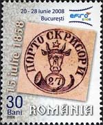
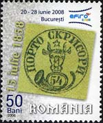
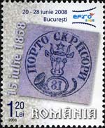
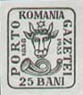
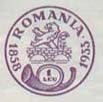
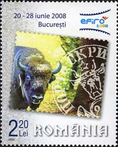
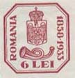

PWO & AIJP geben ein Webmastering Ereignis an der EFIRO 2008 bekannt
Die Briefmarkenwebmaster-Organisation (PWO) ist eine internationaler philatelistische Organisation, dessen Sitz in der Schweiz ist und welche im Jahre 2001 durch seinen gegenwärtigen Präsident Herr Victor Manta gegründet wurde. Seine Absicht ist, den Gebrauch fortgeschritten Informationstechnologien für die Promotion und die Entwicklung der Philatelie zu fördern.
Unter den mehr als 350 Mitglieder befinden sich viele Sammler mit einer großen Erfahrung in philatelistischem webmastering, welche Ihre Kenntnisse und Leidenschaft für Philatelie mit anderen teilen möchten. Einige von ihnen sind auch Sammler mit grosser Briefmarkenerfahrung, Mitglieder von berühmten Briefmarkenorganisationen, welche für ihre Kompetenz wohl bekannt sind und mit verschieden Preisen belohnt wurden, einschließlich jene welche an FIP Websiten-Wettbewerben erhalten wurden.
Ddie internationale Briefmarkenausstellung EFIRO 2008 wird das wichtigste Briefmarkenereignis der letzten 50 Jahre in Rumänien sein. Sie wird Bukarest, der Hauptstadt Rumäniens, stattfinden. Diese Ausstellung wird den 150. Jahrestag des ersten Moldavischen Marken, die berühmten Ochsen-Köpfe gedenken.



Die PWO schlug den Beginn und die Koordination einer Ausstellung von Briefmarkenseiten am EFIRO 2008, Seiten welche der rumänischen Philatelie gewidmet sind. Diese Initiative wurde von Herrn Wolfgang Maassen, dem Präsidenten des Internationalen Verbandes Philatelistischer Journalisten (AIJP), unterstützt. AIJP und PWO sind überzeugt, dass das Interesse für das Briefmarkensammeln durch die Popularisierung von Briefmarkenseiten, welche Rumänische Briefmarken als Ziel haben, beträchtlich steigern wird und dass die Vorstellung der erwähnten Briefmarkenseiten an dieser internationalen Ausstellung einen wichtigen Einfluss sowohl auf die rumänischen Philatelie wie auch auf den philatelistischem Webmastering haben wird.
Die Nachfolgende Daten illustrieren das Interesse für die Anwesenheit im Web der rumänischen Philatelie:
Die PWO zählt zur Zeit fünf rumänischeMitglieder auf
Die Seite des FFR (rumänische Briefmarkenföderation) präsentiert sechs Seiten, welche der rumänischen Philatelie gewidmet sind
Auf den Webseite www.marci-postale.ro veröffentlicht Herr Manta 24 Verbindungen zu den rumänischen Briefmarken gewidmeten Seiten. Deren Zahl ist eigentlich höher.
Im Monat April 2007 genehmigte das Organisationskomitee von EFIRO 2008 das von der PWO vorgeschlagene Projekt. Eine Sitzung zwischen Hauptmitgliedern des OC (Frau Simona Tarabasanu und Herr Cosmin Mateescu) und der PWO fand im Monat Mai 2007 in Bern am Internationalen Büro des UPU statt. Während dieser sehr wirksamen Sitzung einigten sich die Teilnehmer über ihre Absichten und auf die verschiedenen Mittel zum rechtzeitigen Erzielen des Projektes.




Die nachfolgenden Schritte, welche von den Veranstaltern des Ereignisses genommen werden sollen, (PWO, AIJP, OC - EFIRO 2008) sind:
diese Pressemitteilung auf ihren jeweiligen Seiten und in ihrem gedruckten Meldungen zu veröffentlichen
sich in Verbindung zu der Briefmarkenpresse, newsgroups und den anderen Medien zu setzen, um das Prokekt bekannt zu machen.
sich direkt mit den Autoren von verschiedenen Briefmarkenseiten in Verbindung zu setzen, welche der rumänischen Philatelie gewidmet sind, und ihnen vorzuschlagen, an der Veranstaltung teilzunehmen. Wir sind überzeugt, dass sich Webmaster solcher Seiten zur Teilnahme erfreuen werden.
allen interessierten Briefmarkenwebmastern weltweit vorzuschalgen, an dieses Ereignis mit neuen, der rumänischen Philatelie gewidmeten Webseiten, teilzunehmen.
Die Präsentation in EFIRO 2008, wird auf einem Computer mit einem großen Bildschirm vorgestellt, in einer außergewöhnlich für diese Tätigkeit gut passenden Lage. Ein Poster in der Nähe vom Monitor wird Basisinformationen über das vorgestellte Objekt bekanntgeben. Die Präsentation wird auf der PWO Seite am Ende der Ausstellung verfügbar bleiben.
Der PWO Präsident, Herrn Victor Manta, wird die Besucher auf EFIRO 2008 persönlich begleiten, um (in Rumänisch, Deutsch, Französisch, Englisch und Russisch) die kompilierte Darstellung der rumänischen philatelistischen Seiten ihnen zu erklären. Die Besucher werden von seine Kenntnissen profitieren können, da er selber philatelistisch auf im Web seit 1996 tätig ist und diese Angelegenheit wohl sehr gut kennt.
Die interessierten Briefmarkensammler sind bereits eingeladen an dieser Veranstaltung teilzunehmen und dieses e-mail zu benutzen, um sich anzumelden. Genauere Informationen über die Darstellung selber wird in Kürze auf der PWO Website veröffentlicht werden.
Links:
Zu unserem Partner AIJP welcher die Pressemitteilungen auf seiner Webseite veröffentlicht
Zu den Webseiten der EFIRO 2000 welche ebenfalls die Pressemitteilungen veröffentlicht
Zu dem AIJP Bulletin No. 123, 2/2007 gedruckten Seiten
| Created:
05/05/07. Revised: 01/09/10 . Copyright © 2007 - 2010 by PWO and by Victor Manta, Switzerland All rights reserved worldwide. |
|